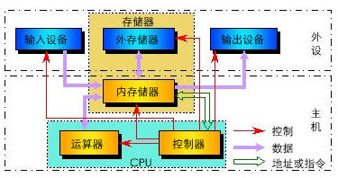

冯诺依曼结构与计算机的工程实现
【转折——眺望IT巅峰】
如何用技术手段造出一个可用的通用计算机是一个工程实现问题。而艾伦•图灵在1936年提出的图灵机，只是一个计算的抽象理论逻辑模型，并不是计算机的工程设计。
现实可用的现代电子数字计算机出现于20世纪40年代。在这个过程中，大家通常认为冯•诺依曼（1903-1957，数学家，计算机科学家，普林斯顿大学任职）起到了关键的作用，被尊为现代电子数字计算机在工程实现意义上的鼻祖，尽管事实上其他人也做出了基本相同的工作成果。而艾伦•图灵，则被认为是计算机科学，也就是计算机理论上的奠基人。
德国的朱赛在1941年最先采用电气元件制造计算机。他制成的全自动继电器计算机Z-3，已具备浮点记数、二进制运算、数字存储地址的指令形式等现代计算机的特征。
美国在1940～1947年期间也相继制成了继电器计算机MARK-1、MARK-2、Model-1、Model-5等。不过，继电器的开关速度大约为百分之一秒，这使计算机的运算速度受到很大的限制。
真正用电子器件做计算的计算机的开拓过程，经历了从制作部件到整机、从专用机到通用机、从“外加式程序”到“存储程序”的演变。
1938年，美籍保加利亚学者阿塔纳索夫首先制成了电子计算机的运算部件。1943年，英国外交部通信处制成了“巨人”电子计算机。这是一种专用的密码分析机，在第二次世界大战中得到了应用。
1946年2月美国宾夕法尼亚大学莫尔学院制成的大型电子数字积分计算机(ENIAC)，最初也专门用于火炮弹道计算，后经多次改进而成为能进行各种科学计算的通用计算机，见图1-4。这台完全采用电子线路执行算术运算、逻辑运算和信息存储的计算机，运算速度比继电器计算机快1000倍。这就是人们常常提到的世界上第一台电子数字计算机。但是，这种计算机的程序仍然是外加式的，存储容量也很小，尚未完全具备现代计算机的主要特征。
1945年3月数学家冯•诺伊曼领导的设计小组发表了一个全新的存储程序式通用电子计算机方案——电子离散变量自动计算机（EDVAC）。随后于1946年6月，冯•诺伊曼等人提出了更为完善的设计报告《电子计算机装置逻辑结构初探》。同年7～8月间，他们又在莫尔学院为美国和英国二十多个机构的专家讲授了专门课程《电子计算机设计的理论和技术》，推动了存储程序式计算机的设计与制造。
1949年，英国剑桥大学数学实验室率先制成电子离散时序自动计算机(EDSAC)；美国则于1950年制成了东部标准自动计算机(SFAC)等。至此，电子数字计算机发展的萌芽时期遂告结束，开始了现代计算机的发展时期。
冯•诺依曼的贡献在于提出了一个清晰的、可存储程序的通用计算机可实现的结构。尽管事实上在他之前和他同期，也有别人提出基本同样的创意，人们还是以他的名字来命名了这个设计，称之为冯•诺依曼结构。

图 1-5 冯•诺依曼结构示意
上面花费相当篇幅介绍计算机诞生初期的历史，是为了引出冯•诺依曼结构的本质。在计算机发展的历史进程中，冯•诺依曼结构的本质可以用三句话来概括：计算机的数制采用二进制；计算机按照程序顺序执行操作；程序存储在计算机存储器内。
在他提出的结构中，数据与程序是放在同一个存储器中的。所以后来有人把数据与程序分开存储的结构称为哈佛结构。其实，在更本质的意义上，哈佛结构应该被看成是冯•诺依曼结构的一个变形，而不应该被认为是一个独立于冯•诺依曼结构之外的全新设计。所以现在人们普遍认为，现代计算机采用的都是冯•诺依曼结构，或者说都是以这个结构为基础的，尽管现代计算机在冯•诺依曼原始设计基础上存在许多不同的局部改变或上层组合。
自冯•诺依曼结构成为基础标准之后，计算机发展到今天的历史，基本上可以概括为两个大的方向：体积越来越小，以便适应更广泛的应用场合；计算速度越来越快，以便能够完成更复杂的计算类任务。计算机硬件技术的发展，基本都是围绕这两个目标进行的，见图1-6。当然，还有一个附带的成果就是存储量越来越大。
需要特别指出的是，不论计算机变得多么小，也不论计算机算得多么快，计算机介入人的智能活动的基础与起点却没有丝毫的变化，依然是有限字长二进制数字的基本计算以及附带的数字存储。

图1-6计算机硬件发展的两个方向
所以，虽然计算机的应用越来越令人眼花缭乱，但是它的本质功能却没有丝毫的改变或者说进步，尽管性能在不断地实现着跨数量级的增长。